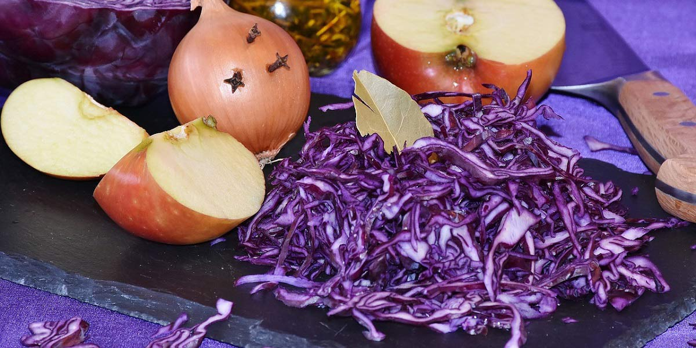

Caramelised Red Cabbage
Recipe Specification
Ingredients List
| Ingredients | Quantity |
|---|---|
| Red Cabbage | 1x1 |
| Root Ginger | 1 Inch |
| Vegetable Oil | 20ml |
| Red Onion | 2x1 |
| All spice | 1 tsp |
| Caster Sugar | 100g |
| Red Wine Vinegar | 150ml |
Yield: 4-5 portions
Preparation
- Remove core from red cabbage and finely shred.
- Peel and grate root ginger.
- Peel and finely slice red onion.
Cooking Instructions
- Place a medium sized saucepan pan over a medium/high heat and add vegetable oil.
- Add red cabbage, red onion, root ginger and allspice before sautéing for 5-6 minutes.
- Add sugar and red wine vinegar to cabbage. Reduce heat and cover saucepan with a lid before cooking gently for 10 minutes.
- Remove lid and simmer for a further 15 minutes until liquid has evaporated and cabbage is sticky.
- Season with salt and pepper.

Serving Suggestions
Serve with braised beef and mash potatoes.
Storing instructions
Cool to room temperature and store in an airtight contain before placing in the fridge. Consume with 4 days of making.
Reheating Instructions
Place in microwave for 2-3 minutes.